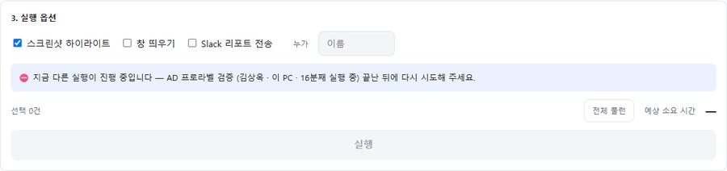
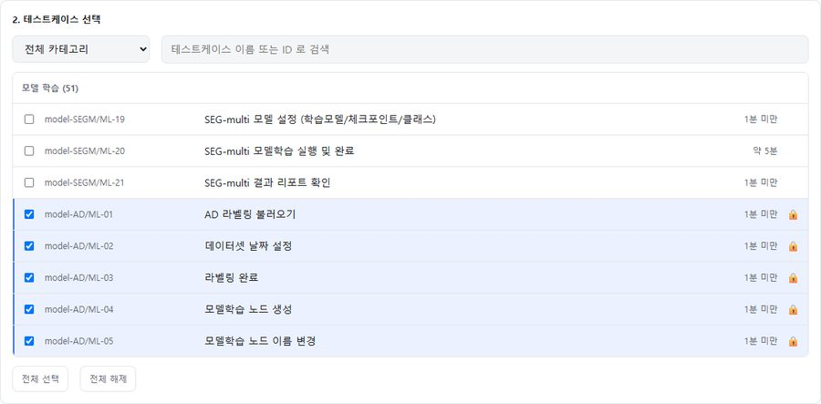
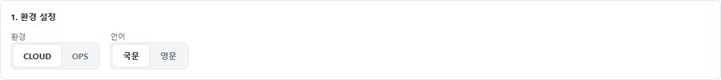
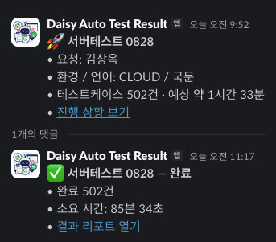
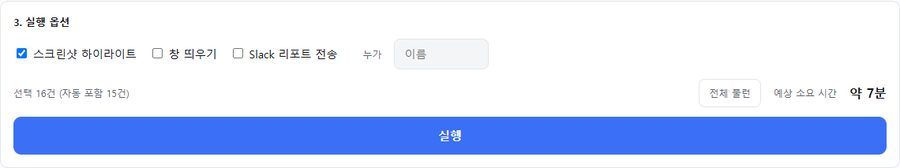
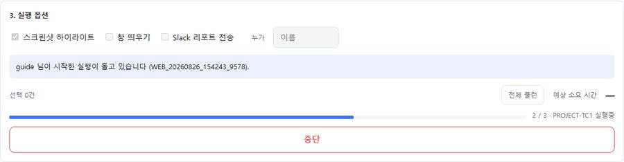
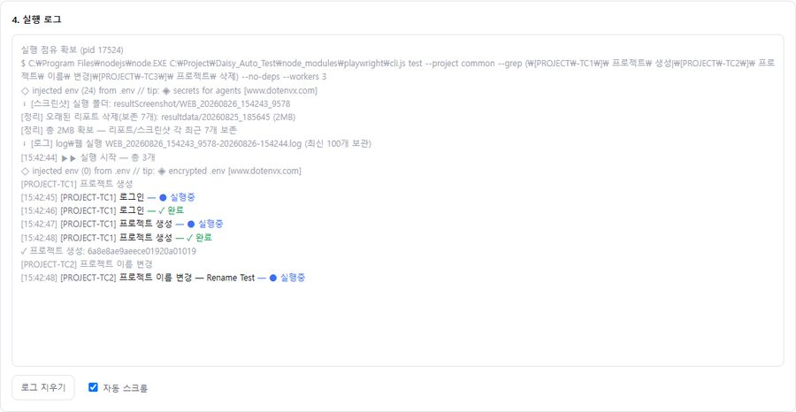
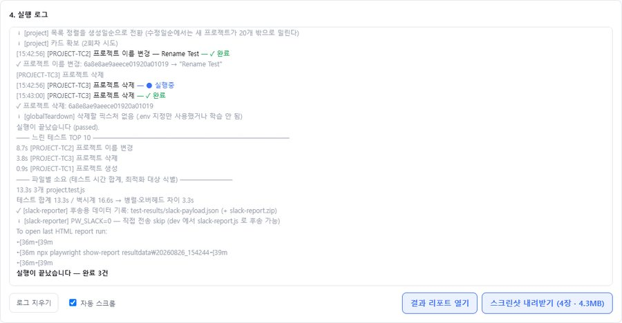
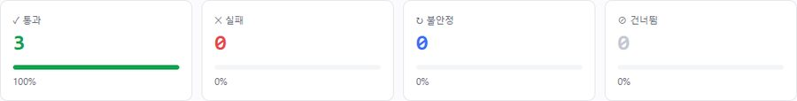
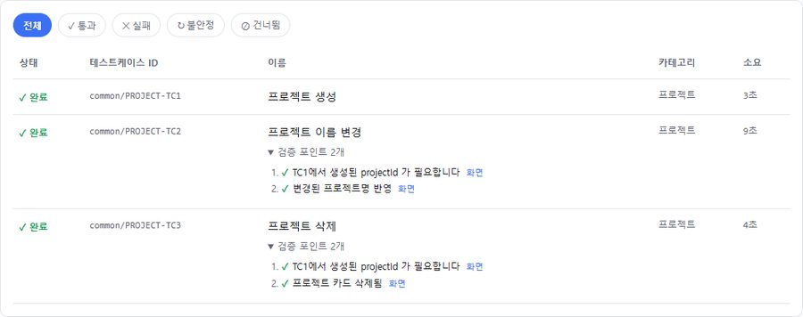

全社で同じプロダクトをつくっているのに、それを検証できる人はごく一部でした。つくる人なら誰でも、自分の変更を自分で確認できるべきだと考えました。そこで、インストールもコマンドも不要でブラウザさえあれば検証が回る環境をつくり、設計・実装・ユーザー向けドキュメントまで1人で担当しました。
同じプロダクトを一緒につくっているのに、品質の確認はQAを通さないとできませんでした。スイートは完成していても、ターミナルや環境設定を分かる人しか実行できませんでした。
「ツールを知らない人が押しても間違いが起きない」を基準に、安全な初期値と依存関係の自動解決を備えた検証環境をつくりました。
インストール0ステップ・コマンド0行で誰でも回せるセルフサービス環境は整いました。ただし今は主にQAが使っており、チーム全体に広げることが次の課題です。
役割 · 設計・実装・ユーザー向けドキュメントを単独で担当

共有アカウントの制約はなくせないため同時実行は止めますが、それが「故障」に見えないよう、 誰が・何を・何分前から実行しているかを同じ画面に表示しました。

プロラベルを検証するには、先にモデルが学習されている必要があります。この依存関係をユーザーが知っていなければならないなら セルフサービスとは言えないため、ランナーが前提テストを自動で選択し🔒で表示します。 マウスを重ねると、なぜ含まれたのかまで表示されます。1件にチェックすると16件が選択されます。


選択件数と予想所要時間をその場で計算しますが、単純な合計ではなく 3 workerの並列という実際の実行方式を反映した値を使います。 環境と言語を変えると、対象のテストケース一覧そのものが一緒に更新されます。

オプションは3つに絞り、初期値のまま実行しても問題が起きないようにしました。 画面のないサーバーではブラウザのウィンドウを開けないため、該当オプションはグレーアウトせずそもそも表示しません。


進捗は「完了数 / 全体」と現在のテストを一緒に表示し、実行ログはリアルタイムでストリーミングされます。 ウィンドウを閉じて開き直しても、他の人が始めた実行に接続しても、ログと進捗がそのまま復元されます。

実行が終わると結果レポートを開く・スクリーンショットのzipをダウンロードの2つのボタンが表示されます。 サーバーで実行してもダウンロードはローカルに保存され、再読み込みしたり後で開き直したりしても、直前の実行結果を取得し続けられます。
自動化の結果がPASS/FAILの数字だけで終わると、人はその数字を検証する手段がありません。


各テストの検証ポイントを展開すると、何をどの順序で確認したかが表示され、 行末の「画面」を押すとその時点のスクリーンショットが開きます。合格したテストにも同じように付きます。
| 表示 | 意味 | 扱い |
|---|---|---|
| 完了 | 検証に合格 | 正常 |
| 失敗 | 期待結果と異なる — 理由と画面を一緒に提示 | 原因を確認 |
| 不安定 | リトライで合格 | 緑ではない · 確認が必要 |
| スキップ | 前提の失敗または中断により未実行 | 前提の結果から確認 |
画面の順序どおりに進めるガイドを、ツールと一緒に作成しました。
| 項目 | Before | After |
|---|---|---|
| 実行できる人 | ターミナルを使えるQA 1人 | ブラウザのURL 1つで誰でも （現在の主な利用者はQA） |
| 実行の準備 | クローン・依存関係のインストール・環境変数・コマンドの習得 | インストール0ステップ · コマンド0行 |
| 同時実行の事故 | 共有アカウントの衝突で両方とも失敗 | 単独実行を保証 + 実行者・経過時間を表示 |
| 前提条件 | ユーザーが依存関係を把握して自分で選択 | ランナーが自動選択 · 含めた理由を表示 |
| 実行中の離脱 | セッションが切れると進捗が失われる | 再接続時にログ・進捗を復元（他の人の実行も含む） |
| 結果の取得 | サーバーに残り、個人のPCに持ってくる手段がない | レポート・スクリーンショットzipをワンクリックでダウンロード |